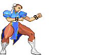

FOOTSIE

Footsie characters fight with a poke-based strategy, controlling the space in front of them with fast mid range attacks. As the name suggests, they play at footsie range. Getting into a range they like and their opponent doesn’t. They have strong mid range attacks (their normal attacks), some have a long reach, or come out fast, or both. They dominate the mid range, but rarely any good attacks outside of this range. Fast walking speed allows them to get to opponent faster without the need to resort to risker options like dashing. However, a bit lacking in pressure compared to a Rushdown fighter. They rely on baiting opponent. Less effective when zoning with projectiles.
Toolkit
- A move to counter projectiles
- Fast walking speed
- Quick normal attacks
- Normal health pool
Strengths
- Fast walking speed
- Fast attacks
Weaknesses
- Limited tools outside mid range
How should I play as this fighter?
Close the gap. Feeling the pressure from you forces your opponent to constantly react to your advances. Although your moves are slower and telegraphs, something setup??
How can I beat this fighter?
Keep them at bay. Grapplers lack range and mobility, so utilize mid to long range attacks you have to prevent them from closing the gap. This renders their throws useless, and they will need to work around your attacks to get into range to deal damage.
Examples
- Chun Li (Street Fighter II, 1991)
- Jun Kazama (Tekken 2, 1995)
- Ling Xiaoyu (Tekken 3, 1997)
Evelynn's Notes & Difficulty Rating
4/5
Footsies